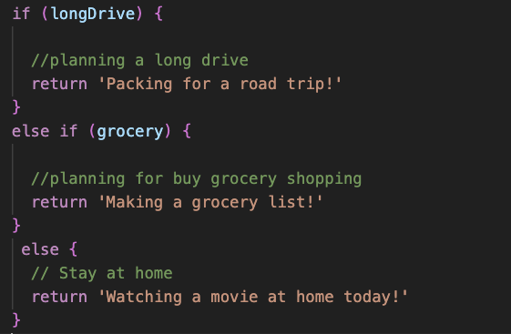
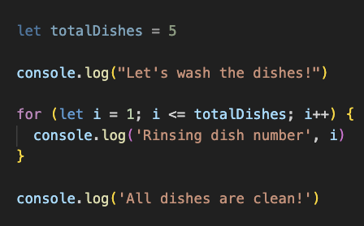
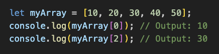
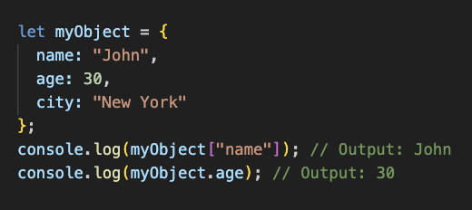

1.What is JavaScript and how does its relationship with HTML and CSS?
JavaScript is a programming language that is commonly used to add interactive elements to websites.
It is distinct from HTML and CSS, which are markup languages used for structuring and styling a website,
respectively.
JavaScript allows for the creation of dynamic content, which can respond to user input and change over
time. This can include things like image sliders, form validation, and live content updates without
needing to reload the page.
JavaScript code is typically added to HTML files and can interact with the structure and styling
defined by the HTML and CSS to create a seamless and integrated user experience. The three languages
are often used together to create modern web applications.
JavaScript adds interactivity and dynamic content to websites, while HTML and CSS are used for
structuring and styling the content. These three languages work together to create the modern web
experience.
• Building a house example :
An analogy for HTML, CSS and JavaScript is like a house :
HTML is the foundation of the house - it is the structure that holds everything together.
It sets out in a logical and organized way what is where on the page and how it should be displayed.
CSS is like the interior design of the house - it gives each element its own unique style and look.
Color, sizes, fonts, and layouts can all be customized with CSS, making the page both visually appealing
and user-friendly. JavaScript is like the appliances in the house - it adds functionality to make it more
interactive. With JavaScript, you can create dynamic websites that respond to user input or other factors
such as time of day or location.
2.Explain Flow Control and Loops with example?
• Control flow is the order in which the computer executes statements in a script. Code is run in order from the first line at the top of a script to the last unless the computer comes across structures that change the control flow, ie conditionals (which may skip code) or loops (which may loop a particular code over and over until completed).

•
The condition longDrive is checked first.
If longDrive is true, it means the person is planning for a long drive.
The code inside the if block is executed, then it returns the string 'Packing for a road trip!'.
•If the condition longDrive is not true, the code proceeds to the next condition, grocery.
If grocery is true, it means the person is planning for grocery shopping.
The code inside the else if block is executed,then it returns the string 'Making a grocery list!'.
•If neither longDrive nor grocery is true, the code inside the else block is executed.
This block doesn't contain any conditions but serves as the default action if none of the conditions above are met.
It returns the string 'Watching a movie at home today!'.
• A Loop is a sequence of instructions that is continually repeated until a certain condition is met.

• We set the totalDishes variable to 5, representing the number of dishes we need to wash. The loop iterates from 1 to totalDishes.
• In each iteration, the loop rinses a dish, indicated by the message "Rinsing dish number ". After all the dishes are rinsed, the loop ends, and the message "All dishes are clean!" is displayed.
3.What is the DOM and how do you interact with it??
The DOM (Document Object Model) is a programming interface for web documents. It represents the structure of HTML or XML documents as a tree-like structure, where each node represents a part of the document, such as elements, attributes, and text. when a web page is loaded in a browser, the browser creates a DOM representation of the page, which can be manipulated and interacted with using scripting languages like JavaScript.

Here's a some basic overview of how you can interact with the DOM using JavaScript:
1.Accessing Elements: You can access elements in the DOM using methods like getElementById, getElementsByClassName, getElementsByTagName, querySelector, and querySelectorAll.
Example: var element = document.getElementById('myElement');
2.Manipulating Elements: You can manipulate elements by changing their attributes, content, or styles.
Example:
element.textContent = 'New content';
element.setAttribute('class', 'newClass');
element.style.color = 'red';
3.Adding and Removing Elements: You can add new elements to the DOM or remove existing ones.
4.Event Handling: You can attach event listeners to elements to respond to user actions like clicks, mouse movements, and keyboard input.
Example:
element.addEventListener('click', function() {
console.log('Element clicked!');
});
4.Difference between arrays and objects?
•In JavaScript, arrays and objects are two common data structures used to store and organize data. The main difference between accessing data from arrays and objects lies in how you refer to the individual pieces of data, or elements, in the collection.
Arrays are ordered collections of elements, each identified by an index, which is a non-negative integer. You can access the elements in an array by referring to their index. Array indices start at 0, so the first element is at index 0, the second element is at index 1, and so on.
Here's an example of accessing data from an array:

In the example, myArray is an array containing five numbers. To access the elements, use square brackets [] with the index of the element you want to retrieve.
• Objects are collections of properties, where each property is a key-value pair. You can access the values in an object by referring to their keys. Object keys are strings (or symbols in ES6), and they are enclosed in quotes.
Here's an example of accessing data from an array:

In the example, myObject is an object containing three properties: name, age, and city. To access the values, use either the dot notation (.) or the square brackets notation ([]). The dot notation requires the key to be a valid JavaScript identifier, while the square brackets notation allows any string (or symbol) as the key.
5.Explain what functions are and why they are helpful?
Functions in JavaScript are blocks of code that perform a specific task. They can take input, called parameters, and do something with it. Functions are helpful because they allow you to reuse code and make your program more organized. Instead of writing the same code over and over again, you can define a function once and call it whenever you need it. This makes your code more concise, easier to read, and less prone to errors.Functions can also take multiple inputs and return multiple outputs. Functions can also be used to simplify complex expressions and make your code more readable. Functions in JavaScript are blocks of code that perform a specific task. They allow you to reuse code, make your program more organized, and simplify complex expressions. They are an essential tool for writing clear, concise, and maintainable code.